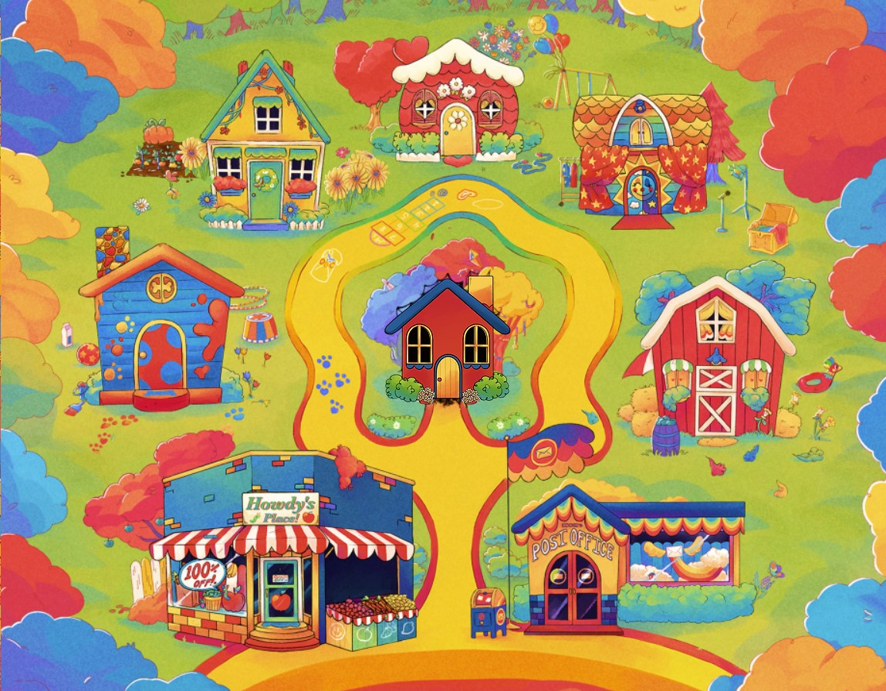

Like any "rule" in the creative world, it's honestly more of a suggestion once you get the hang of why it exists. The inspiration for this post came after I was reading The Design of Everyday Things by Don Norman -- more specifically the section about how contraints are applied. The author covered four types of constraints (coincidentially in Chapter 4). But for the purposes of this post, I'll only include the ones that can more easily apply to digital user interfaces: semantic and logical constraints.
Both types are honestly very similar and easy to confuse and overlap. However, as a rule of thumb, semantic constraints come from understanding how something should work while logical constraints come from how the design should most likely work. It's important then to always keep the bigger picture of your design in mind when it comes to these types of constraints. Getting tunnel vision, or the fallacy of getting so familiar with a complicated feature that you forget its complexity, is how these constraints are created ineffectively.
Back to the point, once a designer understands why constraints are so helpful, you'd need a good reason to stray away from them. I was actually wondering in what kind of example could constraints be played with, and I was reminded of an ARG called Welcome Home. The feature image is what greets newcomers when they visit the Welcome Home site. It looks friendly, but it's like nearly any modern ARG (alternative reality game). ARG creators who use websites as their storytelling medium break design principles to hide sinister mysteries throughout the interface. Take for example, the "Neighborhood" page that introduces the main cast of characters.
It's a bit unconvential to have an interactive image as the navigational interface... But because users know they're supposed to explore the "Neighborhood", they gravitate their cursor towards the houses. Despite there not being many signifiers (besides mostly the cursor changing to the clickable version in the correct areas), the users' semantic understanding of the page's purpose still allows them to effectively use this design.
Logically, since all of the houses were interactable, users should assume that's all there is to this page. Or just that anything interactable should be a notably detailed, intricate section of the image. However, that's where the ARG-aspect comes into play. If you click right below the house in the center, it takes you to a different page that teases the mystery of Welcome Home. I won't spoil it, but that's the fun of media like Welcome Home in the first place. Users are supposed to understand what's the flimsy, cute mask of the ARG by what's presented using normal design conventions. It's about uncovering secrets, so the knowledge that this is an ARG that allows a "poorly" designed interface to work.